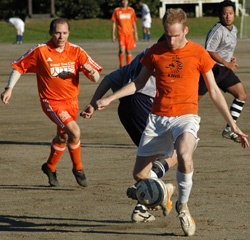

|
Oi Futo, Saturday 1st November
really not much to report, gentle reader, a drab 0-0 as the Embassy`s strikers and midfielders went into full J-League mode today (aka let`s look pretty with the ball who cares about the score), playing a slow football made of too many passes and missing several chances. This is not to say that YC&C 2 did not deserve the draw as their team defended in an orderly fashion, though they seldom made themselves dangerous. On to the next game...
Match report by L. Van der Limentanen
|